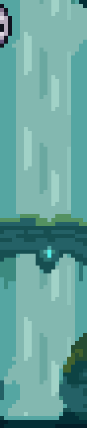
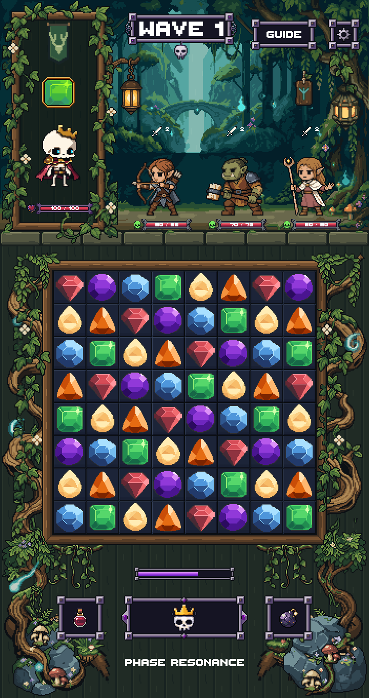

Water detail · exact loop

Both long-tailed comet placements are gone. The waterfall now visibly flows downward in a crisp 24-frame, two-second cycle. The bridge and banks stay fixed.
Actual Unity review copy. Original assets and earlier scenes are preserved. Other wisps, foliage, characters, board and UI match the previous version at the same animation times. No merge.
Water detail · exact loop


Both long comet wisps removed in the revised scene.
The full recordings are eight-second samples. The water detail loops continuously; the remaining lights retain their independent timings.
24 poses at 40 × 144, three water tones, binary source alpha. Native pixel flow advances downward by one pixel per pose at 12 fps. No filtering or screen distortion.
Unity compilation and the focused render test pass. 96 matching before/after frame pairs differ only inside the existing water and the two removed comet regions. All 6,982 prior files are preserved. Exact pixel doubling passes at 720 × 1360 and 1440 × 2720.
LibreSprite source · Native strip · Final PNG · Report · Validation
Zero PixelLab generations used for this correction. Review only; nothing merged.